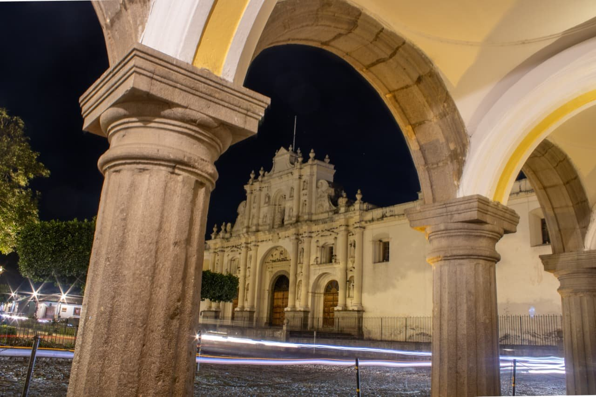
01
Umbral
El arco de Antigua iluminado de noche funciona como puerta de entrada: aquí comienza el recorrido y se presenta la luz como protagonista.
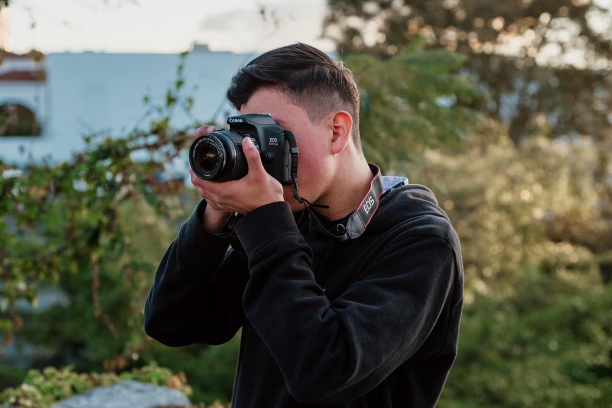
Guatemala entre lo sagrado y lo cotidiano: diez fotografías sobre la luz como hilo conductor de la fe, el paisaje y la mirada.
Ver la serie →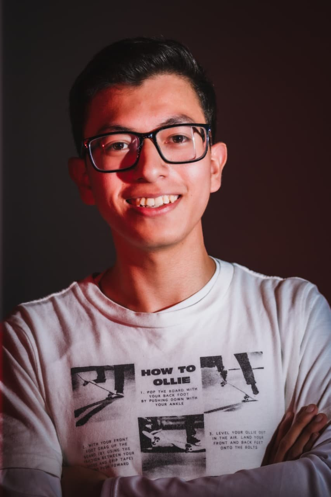
“Mi trabajo busca detener instantes donde lo sagrado y lo cotidiano comparten la misma luz. No retrato objetos: retrato la atención, la espera y la fe de un lugar y su gente.”
Desde la fotografía y el diseño gráfico construyo imágenes con intención: composición limpia, color expresivo y un lenguaje cinematográfico que invite al espectador a quedarse un momento más.
— Edgar G., GuatemalaDurante el semestre fotografié procesiones, plazas, retratos y fauna. Al revisar el archivo completo noté algo en común: en todas las imágenes la luz —natural, de velas, de ciudad o de feria— es quien organiza el sentido.
Así nació Luz y Devoción: un recorrido que parte del umbral de una ciudad histórica, atraviesa la fe popular, se acerca a las personas y a la vida natural, y termina con la luz convertida en movimiento.
Concepto central. La devoción no vive solo en los templos: aparece en la forma de mirar, de esperar y de celebrar. La luz es el lenguaje que la hace visible.
Pregunta guía. ¿Cómo cambia la luz lo que entendemos por sagrado cuando pasa de la procesión a la plaza, al retrato y a la feria?
Su fotografía mezcla identidad, imaginería religiosa y dramatismo barroco. Me enseñó que lo sagrado puede construirse con luz y encuadre.
Referente del contraste, la dignidad y la escala humana. Influye en mi manera de componer y de editar con profundidad tonal.
Su uso del color y la mirada directa inspira mis retratos: presencia, fondo limpio y un punto de color que guía el ojo.
También investigué la tradición de las procesiones de Semana Santa en Guatemala —andas, alfombras, jacarandas y luz de tarde— como fuente visual y cultural de la serie.
De 42 fotografías del semestre seleccioné 10, organizadas en tres momentos: inicio, desarrollo y final.

El arco de Antigua iluminado de noche funciona como puerta de entrada: aquí comienza el recorrido y se presenta la luz como protagonista.
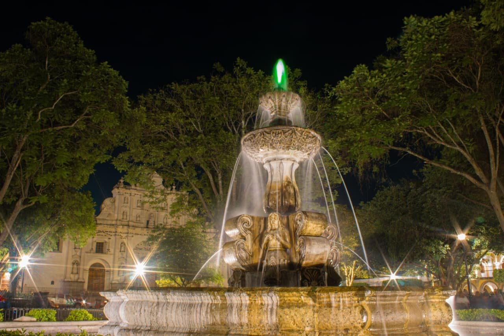
La luz de ciudad convierte la plaza en un altar cívico. Establece el escenario donde ocurrirá lo sagrado.
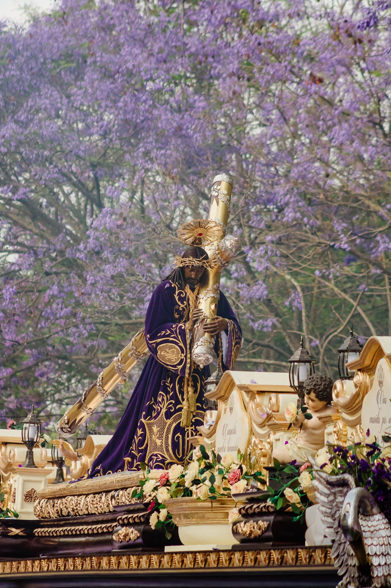
Las andas avanzan bajo las jacarandas: la fe se integra al paisaje. El morado conecta tradición y naturaleza.
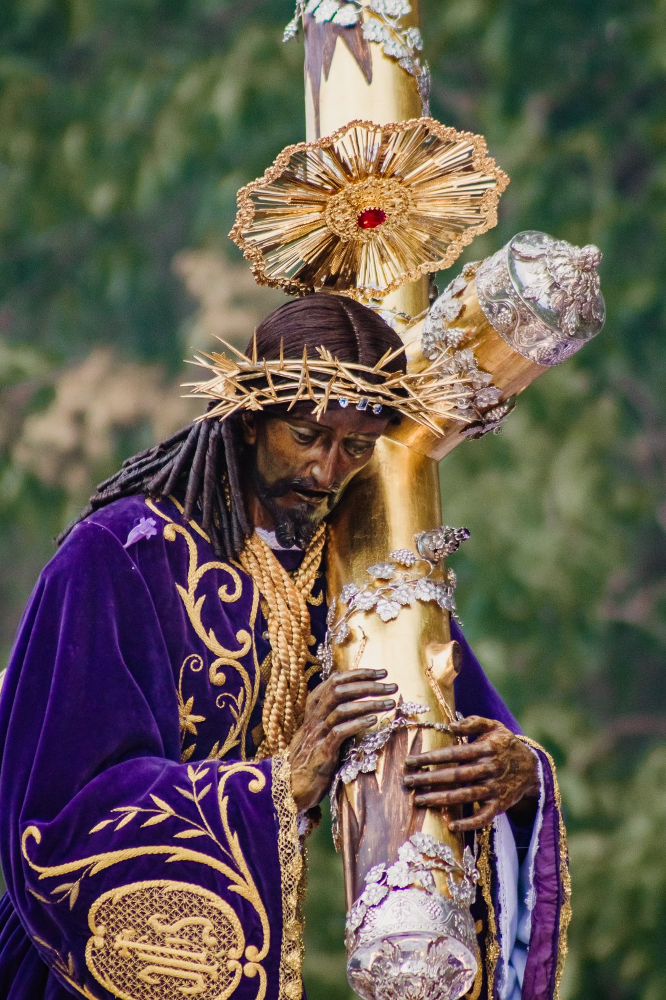
Primer plano de la imagen. El encuadre cerrado y los dorados sobre fondo oscuro acercan al espectador a la devoción.
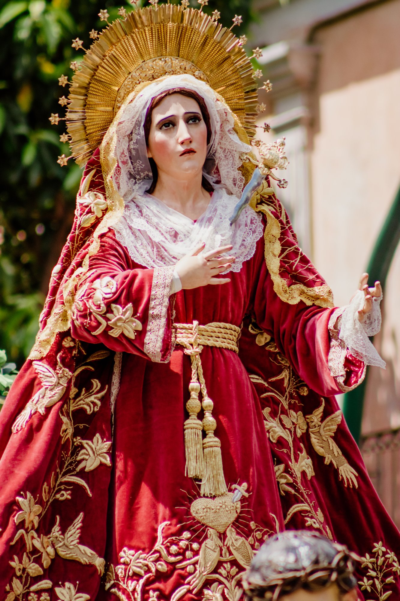
El rojo y el dorado marcan el punto más intenso de la serie: ternura y dolor en una sola imagen.
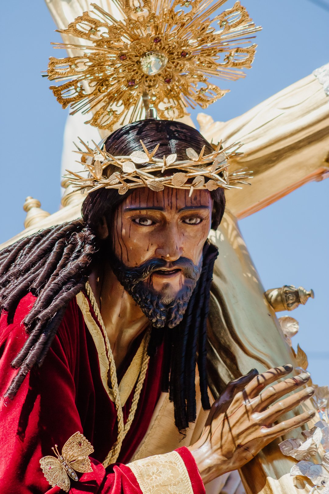
El cielo abierto libera la tensión de las imágenes anteriores y prepara el paso de lo sagrado a las personas.
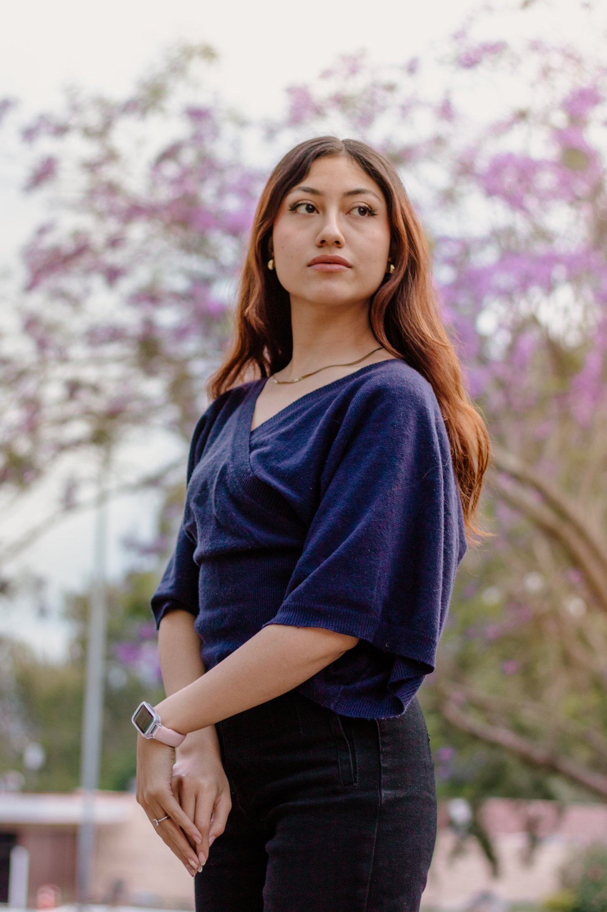
Retrato íntimo con las mismas jacarandas de la procesión: la devoción cotidiana aparece en la calma de una persona.
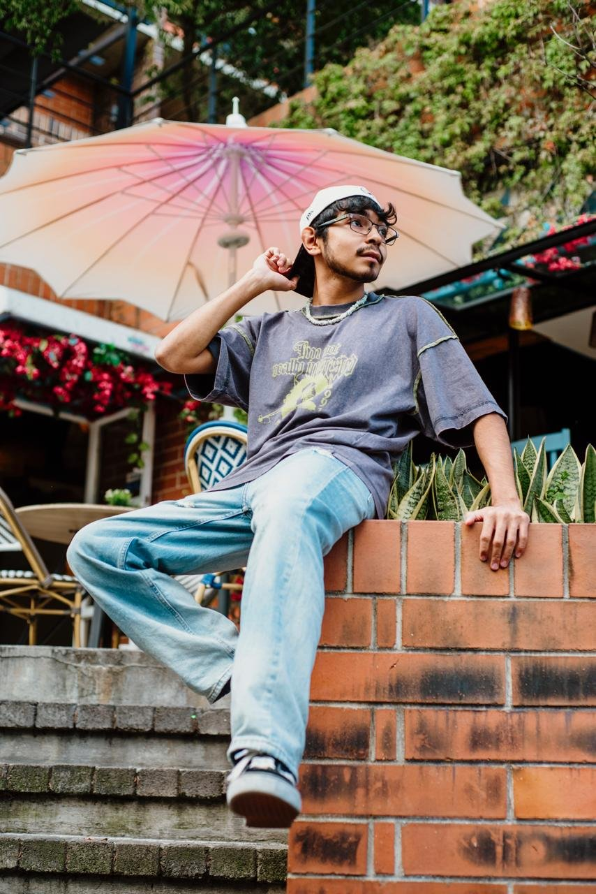
Una figura contemporánea y relajada: la identidad actual dialoga con la tradición vista antes.
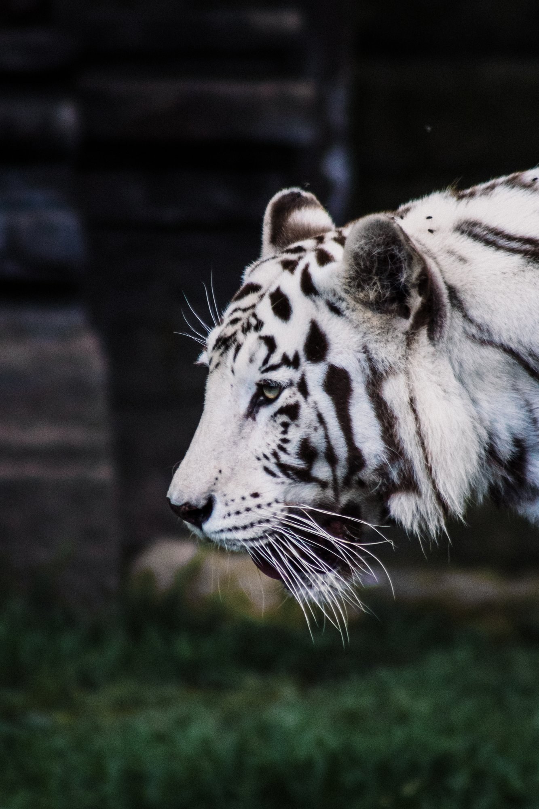
La vida natural introduce otra forma de atención: silenciosa, alerta, sin ritual. Cierra la exploración del desarrollo.
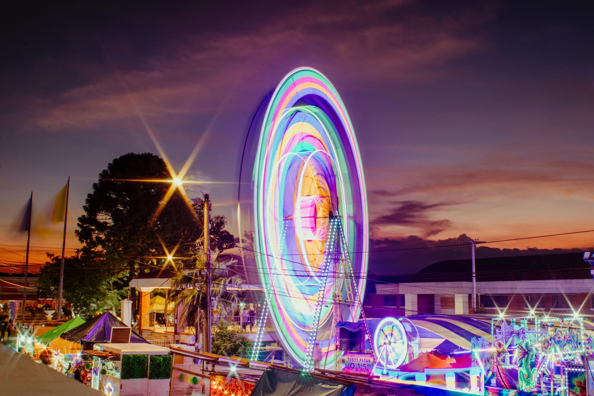
La larga exposición convierte la feria en círculos de luz. Cierra la secuencia: la luz que guió la serie se vuelve tiempo y celebración.
Cada imagen responde a la pregunta guía: luz, fe y vida cotidiana. Se descartaron fotos repetidas o ajenas al discurso.
Paleta coherente (morados, dorados, azules nocturnos), composiciones limpias y alternancia entre planos abiertos y cerrados.
Nitidez, exposición controlada, manejo de luz difícil (noche, contraluz) y edición con tono y color consistentes.
Orden de la secuencia. Va de lo amplio a lo íntimo y de nuevo a lo amplio: ciudad → fe → personas → naturaleza → luz en movimiento. Busco que el espectador pase de observar un lugar a sentir una atmósfera.
Este proyecto me enseñó que una serie no se hace sumando fotos, sino decidiendo qué dejar fuera. La luz fue el hilo; la devoción, la forma de mirar.
Cierro con la idea de que lo sagrado no pertenece solo a un lugar: se encuentra donde alguien se detiene a mirar con atención. Gracias por recorrer la serie.
La luz como lenguaje de la devoción: lo sagrado y lo cotidiano se encuentran en la misma atmósfera visual.
Por su fuerza conceptual, coherencia de color y calidad técnica. Eliminé repeticiones y las imágenes que no aportaban al discurso.
Un recorrido de lo amplio a lo íntimo y de regreso: ciudad, fe, personas, naturaleza y luz en movimiento, en tres actos.
Estética cinematográfica, paleta controlada, encuadres cerrados para lo devocional y abiertos para el paisaje; larga exposición y edición tonal consistente.
Que la fe y la belleza están en la atención: basta detenerse a mirar para descubrir lo sagrado en lo cotidiano.